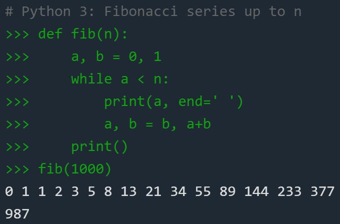
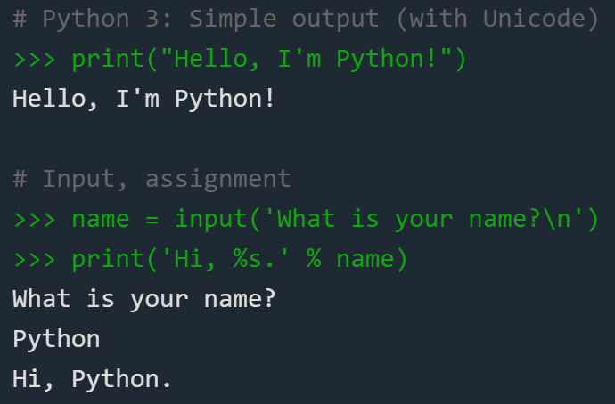

Python 3 programming language

The Python 3 programming language is a powerful tool for creating programs of the most diverse purposes, accessible even for beginners. With it, you can solve problems of various types.
This site is designed to help beginners and teapots learn how to program in python 3. Also here you can learn more about the features of the functioning of this language.
Python has some notable features that make it widely available. Therefore, before learning python, you should talk about its advantages and disadvantages.
Python 3: advantages and disadvantages of the language
- Python is an interpreted programming language. On the one hand, this allows you to significantly simplify debugging programs, on the other - causes a relatively low execution speed.
- Dynamic typing. In python, you do not need to declare the type of a variable in advance, which is very convenient when developing.
- Good modularity support. You can easily write your module and use it in other programs.
- Native Unicode support in strings. In Python, it is not necessary to write everything in English; your native language may well be used in programs.
- Support for object-oriented programming. Moreover, its implementation in python is one of the most understandable. 
- Automatic garbage collection, no memory leaks.
- Integration with C / C ++ if python features are not enough.
- Clear and concise syntax for clear code display. A convenient system of functions allows, with a competent approach, to create a code in which it will be easy for another person to sort out if necessary. You can also learn to read programs and modules written by other people.
- Cross platform A program written in Python will function in exactly the same way regardless of which operating system it is running on.